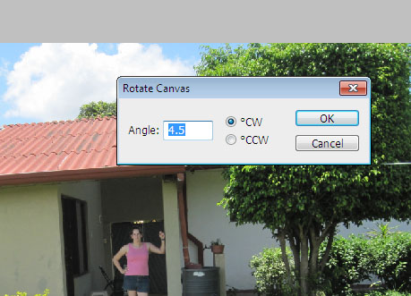
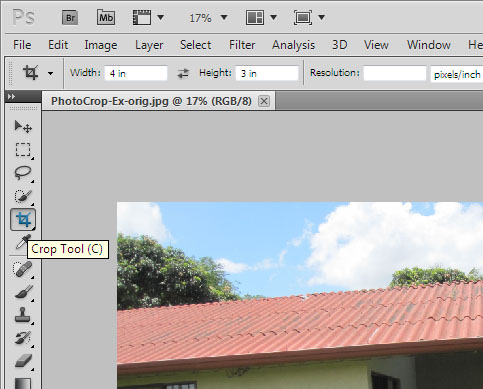
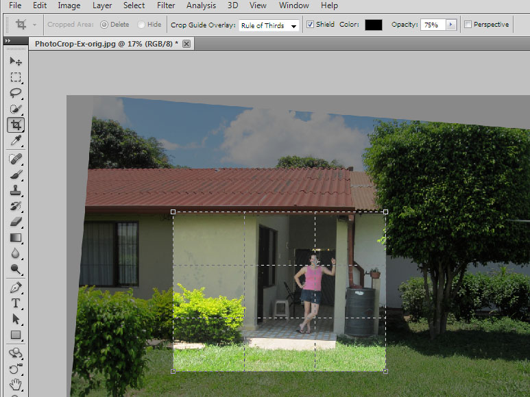

Unit One - Photos
TODO:
Photoshop Section
Over the last two decades digital
cameras have gone from being an item
that only scientific research groups and the government could afford,
to
an item that most people have or know someone who has. They have
even
gotten so small and portable that they are embedded in most modern cell
phones. With the upswing of digital cameras and digital
photographs
has come the ability, which wasn't readily available with photographs
in the past, to modify them after they are captured. This has for
the
first time enabled non-professionals to improve the quality of their
photos using cheap and simple tools to the point that they can match
what is done by many professionals.
For this unit we will learn some basics
about digital images and photos. We will then learn how to use
photo editing software to improve photos. For this we will
primarily be using the GNU Image Manipulation Program (Gimp), but we
will also look at the tools available in Adobe's
Photoshop program to see how to do the same things, where available.
If you don't already have the GIMP installed on your computer, see the page on downloading free software.
Section 1 - Introduction
Section 2 - File Types
Section 3 - The Gimp
Section 4 - Basic
Manipulations
Section 5 - Red Eye Correction
Section 6 - Selection and Layers
Section 7 - Lighting
Section 8 - Touchup
Photoshop
This section will give a quick overview
of how to do the things we have learned about in the GIMP, inside
Adobe's Photoshop Program.
Cropping/Resizing/Rotation
Rotation is a bit trickier in photoshop
than it is in the GIMP. There isn't a tool to do it, just a box
that you can type a rotation angle in. You can get to it from
Image ->

Cropping is just about the same as in
the GIMP. You can set the aspect ratio and rule-of-thirds guide
in the bar at the top of the screen. To move the selected crop
area, you need to click and drag on one of the borders.

Resizing is almost exactly identical to the GIMP.

Redeye
Unlike in the GIMP where we use the
selection tool, then apply a filter to remove redeye, Photoshop has
that all built into one too. Simply select the tool, then use it
to select the red eyes, one at a time.

Layers and Selection
Skin Corrections
Adjusting Lighting
Vocabulary
Pixel - One dot in the image, composed of Red Green and Blue components
(and possibly Alpha for indicating if it has transparency)
Dimensions - The size of the picture, indicated by Width X Height.
Raster - An image made up of pixels arranged in a grid measured by the
dimensions.
Resolution - How fine of detail you can see in a picture, related to
the number of pixels in an image.
Megapixels - The number of pixels in the image, in millions.
Aspect Ratio - The ratio of the width of the image to the height of the
image. For photographs this is usually 4:3.
Landscape Orientation - When a photo is in the direction where it is
wider than it is tall (4:3)
Portrait Orientation - When a photo is in the direction where it is
taller than it is wide (3:4)
Channel - The different red-green-blue-alpha components
Lossless Compression - Storing a file so that it can be perfectly
re-created
Lossy Compression - Storing a file so that it is smaller, but loses
some amount of detail
Undo - The ability to go back to the state of a file before you made a
previous change to it
Rotate - Change the orientation of the image.
Crop - Cut off the an area around the image.
Re-Size - Change the number of pixels that the image is without cutting
off any parts of the image.
Scale - Another word for re-sizing, when you change how large the image
is.
Red Eye - A artifact caused by the flash in a camera that causes the
eyes of a subject to look unnaturally red.
Selection - An area of the image that has been designated to be used
for something else. It can be copied to the clipboard or can have
an
action directly applied to it.
Node
- A point on an irregular selection that defines the boundary of the
selection. These can be modified or moved to change the selection.
Layer
- One of possibly many levels of data in the image, these are all
applied to the image simultaneously, but in order, to produce the final
image.
Transparency - The ability of pixels to be seen through to
the next layer. The channel that stores the data for this is
called
the "Alpha" channel.
Overexposed - When too much light has been
absorbed by the camera's sensor. This causes the colors in the
image
to look washed out.
Underexposed - When not enough light has been absorbed by the camera's
sensor. This causes the image to look dark.
Brightness
- The amount of light that the image has. On an absolute level
(for
24-bit images) the closer the pixels are to 255 the brighter the image
is.
Contrast - The amount of variation between pixels in an image.
If many of the pixels are close to the maximum value and another large
group is close to the minimum value, then the image is said to have
high contrast.
Levels - The amount of brightness (or a sepcific color) that pixels
have.
Histogram - A graph that shows the number of pixels at each level in
the image.
Grayscale - When an image uses only black, white, and shades of gray
instead of color.
Brush - The shape of the tool that applies various effects (heal,
erase, paint, dodge, burn, and more) to an image.
Dodge - Increase the brightness of part of a photo.
Burn - Decrease the brightness of part of a photo.
Other Photo Editing Tools
Picasa -- Photo manager built and distributed by google. It
is more for storing photo collections, and managing them online
and offlline, but also has some photo editing ability, like cropping,
redeye removal and more. Available for Linux, Windows and Mac. -
http://picasa.google.com
Paint.NET -- Similar, but less powerful than Gimp and
Photoshop. Only available for Windows, but is free, libre, and open
source software. - http://www.getpaint.net/
Histogram - A graph that shows the number of pixels
Corel Paint Shop Photo Pro -- Almost as powerful as Gimp
and Photoshop, but a substantially different interface from them. -
http://www.corel.com/servlet/Satellite/us/en/Product/1208716806081
Microsoft Paint -- Comes built in with windows, but is
very basic. Even things like cropping and re-sizing are very
difficult. It is usable if you want to add a little text to an
image, or draw over something so that others can't see it (like
blanking out a screen name or IP address in a screenshot), but not
much beyond that.
Microsoft Photo Editor or Photo Manager -- Tools
from Microsoft that come with Microsoft Office. Useful for basic
editing, such as cropping and re-sizing.
ImageMagick -- A command line based tool (there are also
various graphical user interfaces for it) that instead of editing an
image by click on it edits the image by specifying commands that can
be done to it (e.g. -resize 30%, -crop 120x120, convert image.jpg
image.png and lots more). This is really great if you have a lot of
images and want to do the same thing to all of them. For instance
you can easily resize hundreds of images in a few seconds instead of
opening them up in the Gimp and resizing them one by one. Image magic
is free, libre, and open source software and runs on Linux, Windows,
and Mac. - http://www.imagemagick.org/
Hugin -- This is a tool that
will create a very high resolution panoramic photography by stitching
together multiple, overlapping photographs. When you have a
large, stationary (at least for a minute) scene like mountains, lakes,
etc., you can take several pictures where each one overlaps ~1/3 of the
one next to it. Then feed all these images into Hugin, and it
will give you an output image that combines all of the input images
into one. http://hugin.sourceforge.net/
UFRaw -- Some, more
advanced, cameras will allow you to get your images out of them in a
format generally called "Raw". This keeps any of the data that
might have been lost in the JPEG compression, as well as more data that
came from the sensors about the image. This extra data is useful
for professionals, as it allows them better control over
color/brightness corrections. UFRaw is a program that will work
with this raw images, it also has a plugin for GIMP that will let you
work with them in the GIMP. http://ufraw.sourceforge.net/
FSpot -- A photo manager,
similar to Picasa, but open source (unfortunately, only runs under
linux). http://f-spot.org/
Shotwell -- A photo manager,
similar to Picasa, but open source (unfortunately, only runs under
linux). http://yorba.org/shotwell/
Exercises
Photos and File Types
1- Select all of the following image resolutions that are in a 4:3
ratio? (A typical landscape picture)
1920x1080
|
1600x1200
|
640x480
|
720x480
|
1280x720
|
1000x750
|
750x1000
|
720x640
|
1844x1383
|
1152x768
|
1024x600
|
3000x4000
|
1400x1050
|
8x6
|
4000x3000
|
2- How many color channels does a 24-bit photograph have?
A)
24
B)
3
C)
4
D) 6
3- What color to you get from a pixel that has the following components
(8-bit) Red:200, Green:50, Blue:200 ?
A)
Orange
B)
Brown
C)
Purple
D) Red
4- What pixel components (8-bit) make the color yellow?
A) R:255 G:0
B:255
B) R:200 G:200
B:200
C) R:255 G:255 B:
0
D) R:100 G:50 B: 220
5- What is the un-compressed size of a 24-bit, 1600x1200 photo?
A) 5,760
KB
B) 1,920,000
B
C) 1,024
MB
D) 576 KB
6- Lossless images are good for websites where it is important to
have quick downloads.
True
False
7- Lossless images are good for editing images, where it is
important to not lose any quality while editing.
True
False
8- Which image format is most used by consumer cameras?
A)
JPEG
B)
PNG
C)
SVG
D)
TXT
E) PSD
Basic Manipulation
These three images are quite
similar to the original, they can all be
rotated, cropped, and re-sized.
PhotoCrop-A-orig.jpg
PhotoCrop-B-orig.jpg
PhotoCrop-C-orig.jpg
Red Eye Reduction
These images are all examples of red eye that can be removed by
selecting the eyes and running the red eye removal tool on them.
Redeye-A-orig.jpg
Redeye-B-orig.jpg
Redeye-C-orig.jpg
Seleccion and Layers
Here are some more pairs of images you can try this out with.
LayerBackground-A-orig.jpg
LayerForeground-A-orig.jpg
LayerBackground-B-orig.jpg
LayerForeground-B-orig.jpg
LayerBackground-C-orig.jpg
LayerForeground-C-orig.jpg
Lighting
Here are some more examples of complex images with areas over and under
exposed.
Levels-A-orig.jpg
Levels-B-orig.jpg
Levels-C-orig.jpg
Touch Up
Here are some more faces with some small imperfections to try the tools
out on.
Face-A-orig.jpg
Face-B-orig.jpg
Face-C-orig.jpg
Unit Project
For the final project in this unit, you will need to go out onto the
internet and find two (or more) seperate photos that can be combined
together. This should be similar to the section on selection and
layers. However, you will receive more points if the images
require the use of other techniques that we have gone over such as
changes to lighting or rotation.
Preliminary Review
Before starting work on the editing of the images, your concept should
be submitted for review. It should include:
- The attribution line for each of the images being used.
- A written description of what operations you plan to perform on
these images, listed out step-by-step.
Final Submission
When you have completed your project, you need to submit it for
grading. Please include:
- The final image.
- The attribution line for each of your sources.
- A written description of what operations you performed to get to
the final image, listed out step-by-step.